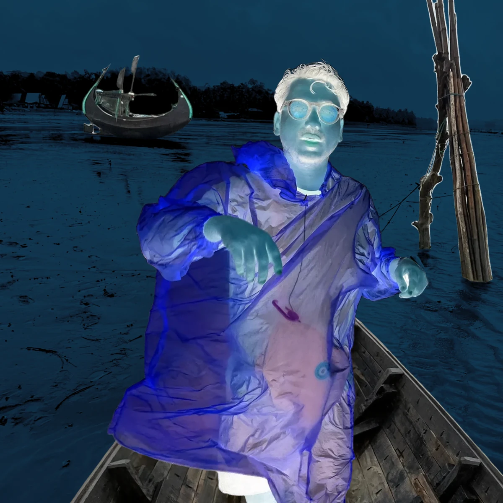
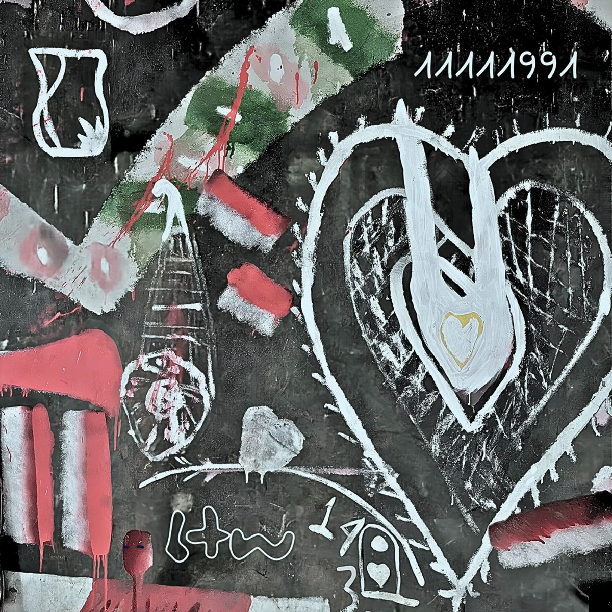

BTW143
BTW143 is an artist.
BTW143's debut album is out in the North Galaxy of Universe 7, particularly on their place of birth on Planet 4032-Green-877, also known as 'Earth'. The sounds and silences were procured from the Source, with BTW's soul, mind and body as the vessel. With a gentle nod from the angels and gods of the multiverse, BTW is releasing their music out in the lower realms. Their debut album titled '11111991' consists of 11 soundscapes totaling 35:35, and is set to hit major streaming platforms on their 35th birthday, this November 11.
Pay attention to the silence. There are no voices here.

THE TITLE OF THIS ALBUM IS ‘11111991’
11 SONGS / 35:35

This album was born out of dreams which seemed unachievable in this lifetime. It holds love, pain, and lot of grief. It holds loud silences and supersonic outbursts into space, the unwavering calmness of the ocean, sometimes all clashing with each other in subliminal dimensions.
The album's artwork is done by my recently deceased father, who painted it on the walls of our ancestral home in Chittagong.
I can't believe I am having to put this as a disclaimer, but all the music here is produced, mixed/mastered by me, and no AI. Most of Side A was lost and found, composed between 2022-24, while Side B was created in the last few months.
Listen to the first tracks from each Side for free on this website, and short previews to the rest. I mean, it's coming out soon anyway. So enjoy!
The album is best listened to with headphones, or large bass-heavy speakers outdoors, without human interruptions.
SIDE A
- 01gemstwuan
- 02ammusama
- 03fynanchi
- 04volcanitze
- 05quickxsand
- 06dreadlush
SIDE B
- 07turnserene
- 08waashnai
- 09seaquence
- 10oceaaniche
- 11hakaishin
JOIN THE LISTENING PARTY ONLINE
BTW143 is hosting a Listening Party on Bandcamp. Please RSVP and leave a message.